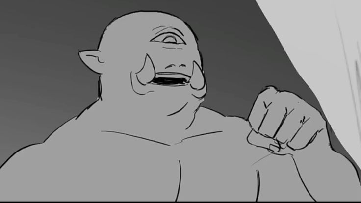

Polifemo é um ciclope gigantesco que vive isolado em uma ilha. Ele é extremamente forte e assustador, representando um dos perigos mais famosos enfrentados por Odisseu.
Quando Odisseu e sua tripulação encontram Polifemo, precisam confiar na inteligência do líder para escapar. Esse encontro se torna um dos momentos mais marcantes da jornada.